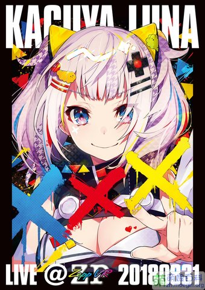

形象由Mika Pikazo設計. 自2017年12月開始活動以來, 人氣迅速飆升, 訂閱數在一個月內達到30萬人.
由於其獨特的聲線而迅速受到關注, 被日本粉絲稱為 "首絞めハム太郎" (被鎖喉的哈姆太郎). 亦有 "可卡因醬" 等暱稱.
輝夜月在開始活動後不久即在Bilibili上開設官方頻道, 另開設有官方微博.
在眾虛擬Youtuber中對絆愛尤為尊重, 並以 "親分老大" 稱呼她.
搭檔為炸蝦 "賈斯丁·蝦伯" , 西蘭花 "巴勃羅科力" 配音皆為輝夜月.
在Vtuber們的網頁遊戲 (エビフライ) 中, 坐騎為蝦伯. 失敗時會被蝦伯嘲諷.